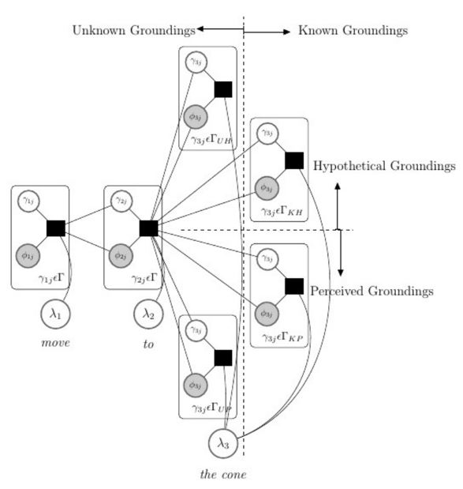

Publications
| Emergent Discrete Communication in Semantic Spaces Mycal Tucker, Huao Li, Siddharth Agrawal, Dana Hughes, Katia P. Sycara, Michael Lewis, Julie Shah, NeurIPS 2021 [ pdf] |
|
| What if This Modified That? Syntactic Interventions via Counterfactual Embeddings Mycal Tucker, Peng Qian, Roger Levy, ACL Findings 2021 [ pdf] |
|
 |
Learning Unknown Groundings for
Natural Language Interaction with Mobile Robots Mycal Tucker, Derya Aksaray, Rohan Paul, Greg Stein, and Nicholas Roy, ISRR 2017 [ pdf, video ] |
|  | DCG-UPUP-Away: Automatic Symbol Learning through
Grounding to Unknowns Mycal Tucker, MIT Masters Thesis [ pdf, video ] |